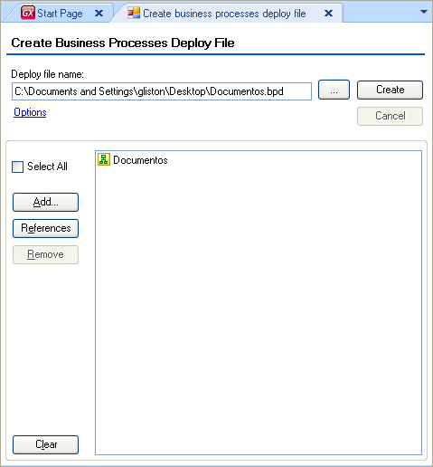
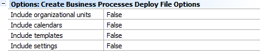

Create business process deploy provides a mechanism for sharing Diagram information among other GXflow database. You can deploy one or more Business Process Diagram from a Knowledge Base. Some options are available to help you with this task. You may deploy, however, only a few of them (Add button) and also add those diagrams referenced by the ones you select (References button).  If you select the Options link, you are able to modify some options in the Properties window, by the following:
 Once you have your diagram deployed you must follow the instructions in HowTo: Deploying a Workflow-based Application to apply in production environment.
|
| Backlinks | |
| Business Process Deployer | GeneXus Business Process Modeler Tools |
| HowTo: Deploying a Workflow-based Application | Workflow Tools |